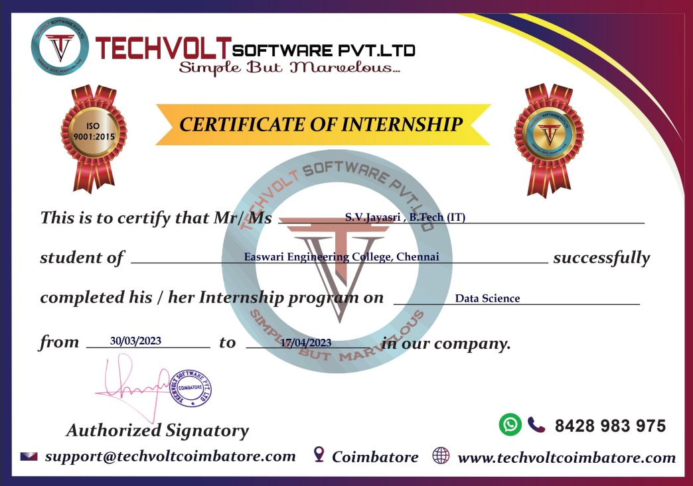
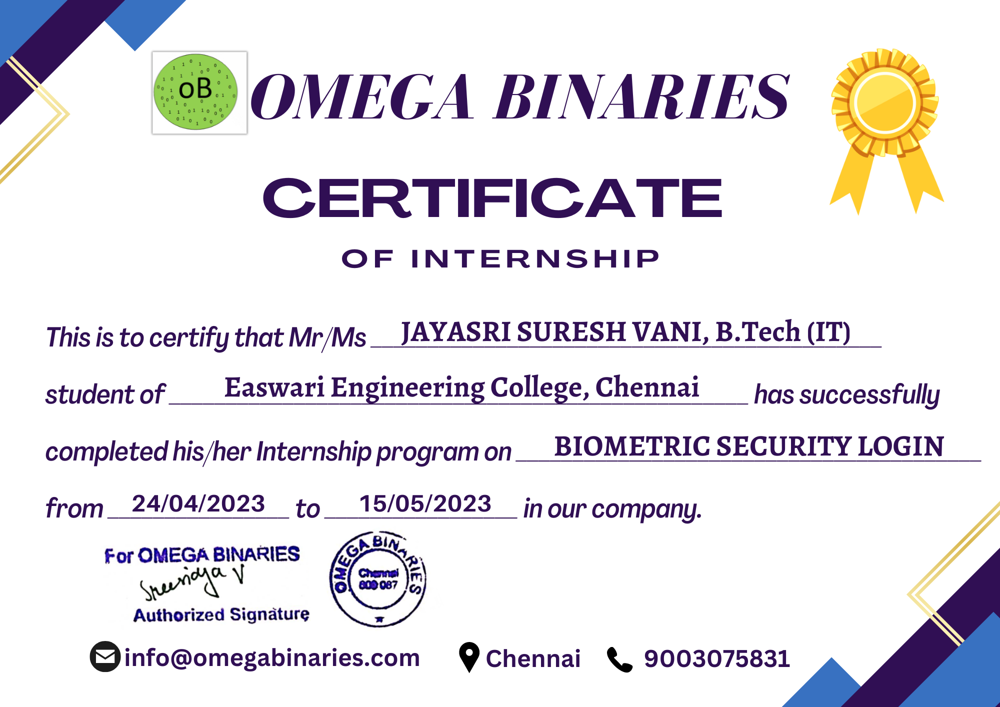
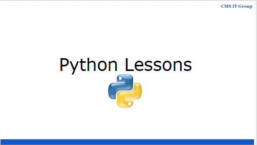
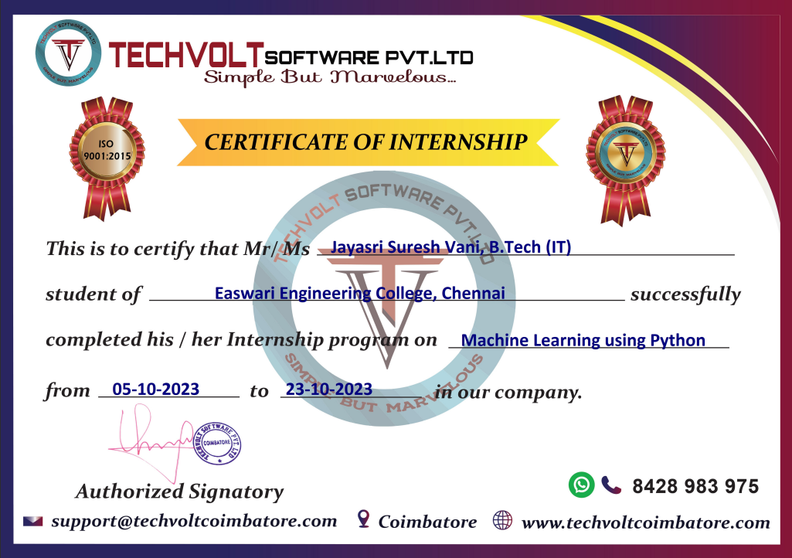
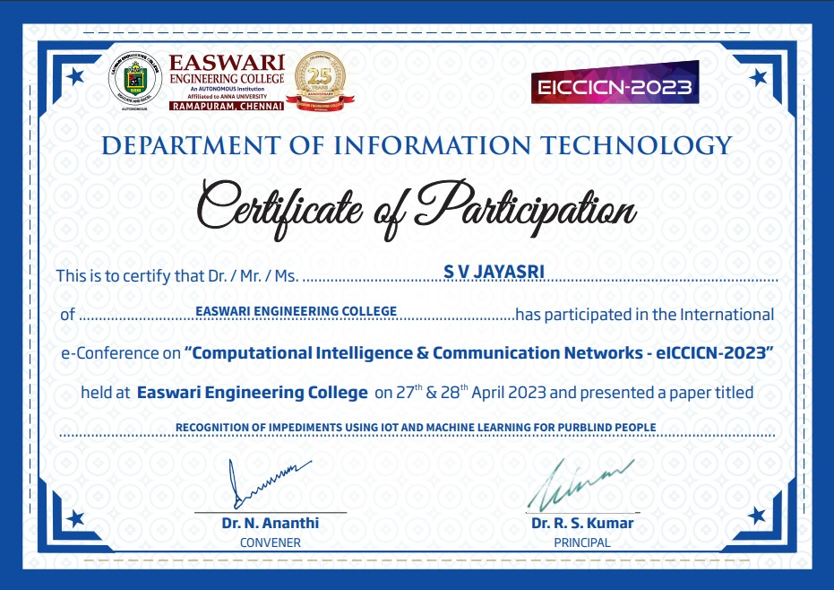
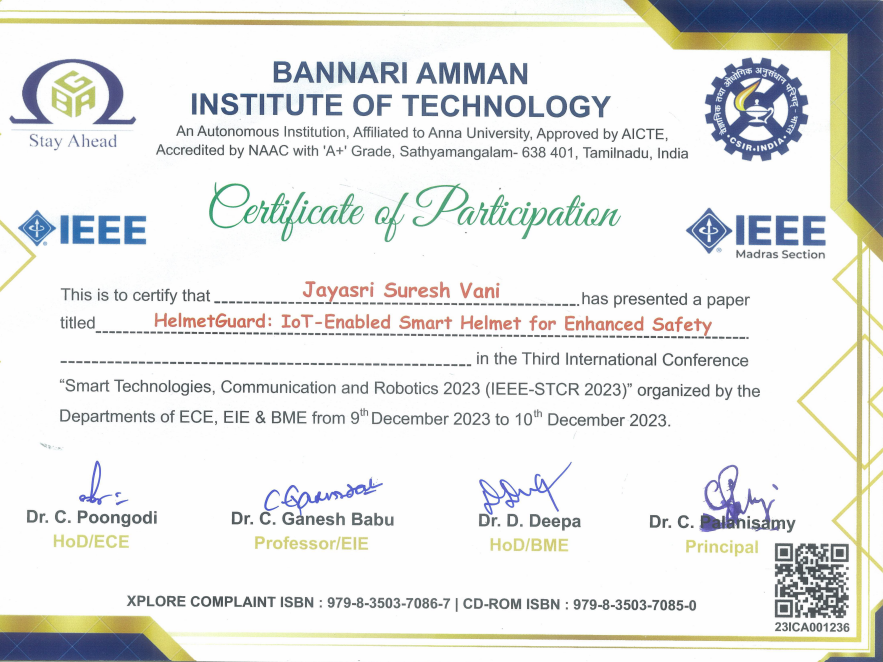

Experiences and Services

Internship at Techvolt gained me hands-on experience in analysis and visualization of data. I honed skills in preprocessing, feature engineering using popular libraries. Collaborating with the team, I contributed to innovative solutions.

During my 20-day internship at "Omega Binaries," I actively contributed to the development of a biometric login system using Java Swing. I gained valuable experience in crafting intuitive user interfaces and integrating biometric authentication, elevating my skills in Java programming and user-focused design.

I instructed Python programming to diverse international students at CMS IT Group for 2 years. Cultivated a dynamic learning environment, tailoring teaching methodologies to meet varied cultural and educational needs. Fostered strong understanding and enthusiasm for Python through engaging lessons, enhancing students' proficiency and coding skills.

I had the chance to apply theoretical knowledge to solve practical problems, gaining a deeper understanding of algorithms, data preprocessing, model building, and evaluation. Throughout my internship, I actively contributed to projects that involved data analysis, feature engineering, and the development of predictive models.

Conference on "Recognition of Impediments using IoT and Machine Learning for Purblind People" focuses on leveraging the potential of Machine Learning and Internet of Things (IoT) to identify and address obstacles faced by visually impaired individuals in their daily lives.

HelmetGuard represents a convergence of cutting-edge technology and safety innovation. Leveraging Internet of Things (IoT), this smart helmet is designed to elevate safety standards for individuals in high-risk environments. I delved into the key components of the project, showcasing how theoretical knowledge in algorithms, data preprocessing, model building, and evaluation was applied to create a robust and intelligent safety solution.